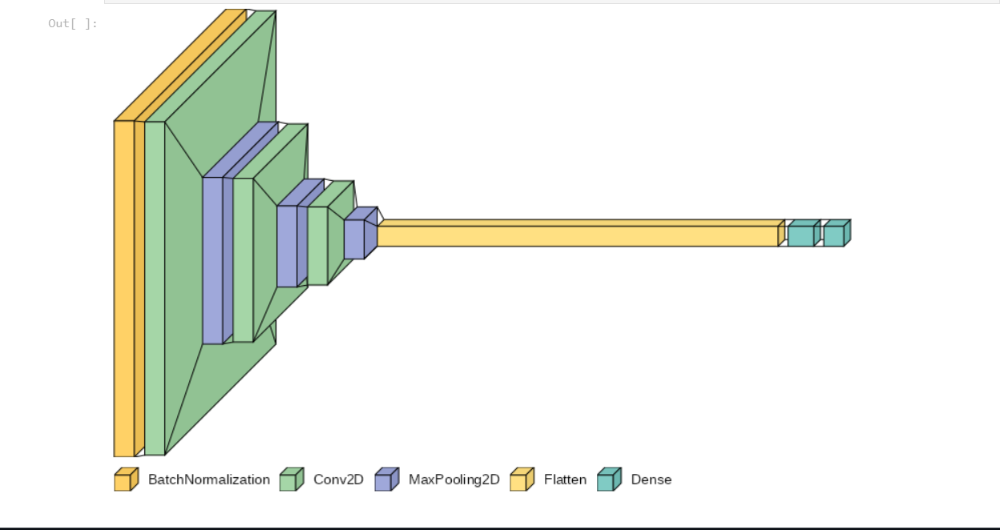

Deep learning based Pneumonia classifier
Seven Convolutional Neural Network (CNN) models were evaluated,

About the project:
- Seven Convolutional Neural Network (CNN) models were evaluated.
- The ResNet-50 demonstrated superior performance with higher accuracyand improved generalization.
- Making it the preferred choice for futureuse in various computer vision tasks.
Here is the project GitHUb link: